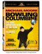
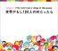

30
29
|
28
27
26
25
24
23
22
|
21
20
19
18
17
16
15
|
14
13
12
11
10
9
8
|
7
6
5
4
3
2
1
9/30(Tue)
- [blog]
「［挑む］研究者たちの素顔／１１ カリフォルニア工科大教授・金森博雄さん（６６）」
@mainichi
(lc)
- [news]
「理科好き育て、小柴さんが財団 ノーベル賞金など投じ」
@asahi
(lc)
- [blog]
「◆ニッポンの大問題2003〜いま、「壊す」から「創る」ステージへ〜」
@miyadai
(lc)
- 川田龍平さんの名前を久しぶりに見た
- 「プチ愛国」って何だ?
-
[news]
「イラク戦争反対で「解雇」 前大使、異例の外務省批判」
@yahoo
(lc)
- [phys]
APS
の会費 $102 + $6 x 2 を on-line で納めておく
-
[phys]Non-Uniform
-
夜、日曜に買って来た
「Bowling for Columbine」
を見る

-
なんでか知らないけど (michael moore の風貌からかなぁ)、
軽い気持で見はじめたんだが、
ド serious であった
-
きちんと考えてみれば、そうだからこそ買ったわけで、
どこで何がどうなって、軽い気分になってたのか、
ちょっと疑問だ
-
10/4/2003 付記:
この映画を、「アメリカって恐いね」と見るのはおかしくないか、と思った
-
←
4/15/2004
-
のは、
これ 2003/9/8
(lc)
読んで感じたこと
-
どう感じるかなんか、個人個人の問題なんだけど、
メッセージの一つは
(そこでは当然、アメリカの普通の人達に対して、ではあるんだけど)
自分を部外者にするな、ということがあったと思ったんだけど
-
12/19/2001
にうなって以来、結構共感を持っていたんだけれど…ってこと
-
「イラクと地続きの場所に住んでいる人間として」
という主張は、アメリカと日本と何も変わりない
-
それに、実際問題、イラク攻撃を日本は支援していた訳だし
-
アメリカに住む日本人だから、そう思うだけなのだろうか、
日本に住む日本人には、よその話なんだろうか
-
「銃」に focus すれば、日本人としては、まぁ逃避出来るんだろうけれども
-
今度ニュースステーションを辞める久米宏に聞きてみたいな、
100% の信念で、自分らの番組が企業の食い物にされた可能性がないかどうか
-
どうするのが正しいんだろうか (あるいは better なのか)、分からない
-
理解不能な、故に恐ろしい事件を、報道しない、という
アプローチは間違っているのは確かなんだが
-
バランスが欠けている、バランスが肝心、と言うのは簡単なんだけど、
その「正しいバランス」ってのものの実感が分からない
-
田中真紀子
(何だかんだで、また戻ってくんのか……と脱力している最中なんだが)
が何時だかニュースステーションで言っていたように、
テレビを見るべきじゃないんだろうな、
踊らされたくなかったら
-
日本に帰ることがあったらば、テレビ (放送) は見ないことにしよう、
と思っている (が、元来テレビっ子だからなぁ)
-
アンテナ付けなかったら、NHK の勧誘のじじい (or おっさん) に
正々堂々と「見ないから払わん」と言えるのだろうか
-
実際問題、彼らの集めたお金と、彼らに払ってるお金と、+/- どうなんだろう
-
集金システムを廃止した方が、経費削減にならんのか、ってこと
-
公共放送だから云々という主張を正々堂々と言うのなら、
テレビに課税すりゃあいいんだ、 NHK 税を、
それなら不公平も何もない
-
デジタルは、どうも、やっとこさ、
システム的に課金する方向に行ってるみたいだけれど
-
←
10/10/2003,
10/1/2003
9/29(Mon)
-
[phys]
たまには人の振り見よう企画の一つで、
「ソフトマターの物理学2003」
から、
いわゆる「中原実験」の
概要
を見た
-
「記憶」という term は、
この現象に使うべきでは無いんではないだろうか
- 科学的に見て、擬人化ってのは生産的なのかな、ということ
- 何をどう考えるのも自由なんだけど、
名前を付けることで見方が狭くなるんでは、不自由だし
- 他にグッと来たもの、
「鏡の国のニュートン流動場における粒子」。
- 「この研究会に触発された研究論文の登録にご協力ください」
っての、
こっち (専門家、研究者) 向いてんのかと思って「ほぉ」と思ったら、
あっち (非専門家、非研究者) 向いていた…
- 「共同利用活動の必要性を誰の名にも分りやすいものにする」
ことは必要であると思う、
「誰の目」の間違いだとして
- 「ほぉ」と一瞬妄想したものは何だったのか、というと…
- もっと informal なレベルでの論文を物性研究に出そうという話とか
- もっともっと informal なレベルでのオープンな議論の場とか
- ←
10/6/2003
- 6/13/2008:
たまには人の振りを（意識的に）気にしてみようかな。
- [phys]
「鏡の国のニュートン流動場における粒子」
-
andrea から mail, JFM のおもしろそうな論文を教えてもらった
-
[phys]Non-Uniform
-
[music]
john scofield band
live
@
funkbox,
最高であった、これまで行った色んなライブの中で一、二を争うくらい
- 面子は
Avi Bortnick (g,samp),
Adam Deitch (d),
Mark Kelley (b),
John Scofield (g)
- 前座の
brock
くんは、
悪くなかったんだが、 main act が良すぎた
- 一曲目、その場でサンプリング重ねていった一人バンドでのノルウェーの森、
その後の trio 一曲は良かったけど、
その後ちょっと単調であった
- し、耳を壊された…
- funkbox
はこじんまりとして、基本は floor だったけど、
二階の手すり際の椅子に座れたので、踊らされずにすんだ
- 11:30 過ぎてたので、座れなかったら疲れて切り上げていたかもしれない
- 客層は、はじめちょっと大人って感じであったが、
main act が始まる頃に若い子たちがドッと増えた
- 皆、まじめそうな感じで、
雰囲気のよい場所だった
- で、まだ耳鳴りがしている…
- ←
12/16/2003,
10/15/2003,
10/2/2003,
10/1/2003|
9/19/2003
→
- サマリー： john scofield
- 6/16/2008:
edmonton の live, チケットを手配。
- 6/29/2008:
maceo parker @ edmonton.
9/28(Sun)
-
[news]
「ＪＲの甘い判断に重なるミス、「休日台無し」怒りの声」
@yahoo
(lc)
- 計画のニュースを見たとき、成功するかな
(うまく行かない可能性が 0 じゃないかもな)、と思ってた
- ってのは、
ちょっと (ずっと ?) 前に、
(品川?) 駅ホームの工事に伴う、
終電から始発までの分刻み (秒刻み?) の話を思い出したから
- 凄いと思ったんだがのは、それはそれだけ難しいことの裏返し
- 凄いことが当り前になると、皆、ウマやシカみたいに、
有難味を忘れるからな、簡単に
- 今回の件で文句を言っている人間の大半は、
各人の見込みが甘かったってだけだろう
- 皆、何と言うか、本当に狭量だな、
牛乳飲んだ方がよい
- しかし、この出来事が JR へのありがたさに継らないんだな
- 実際のところ、そういうことなんだろうけれど、
それだけ依存してたと
- だけど、
「上下線ともに運転が再開されたのは、…午後２時前」
なのに
「２８日午前９時過ぎに (バスの) 代行輸送を打ち切った」
のは、
「見通しが甘かった」
んではなくて、無責任というんだろう
- [blog]
「【第138回】ノイズや先入観をさけて、ゼロ地点からヒットを生み出す人たちについて (福冨忠和)」
@mycom
(lc)
-
[blog]
「バブルの波に乗るのは悪いことか？」
@mochio
(lc)
-
Tok2 が使えなくなったかな?
- 何か規約違反していたっけ?
- と、最近来てたメールを見てみると、
更に何やらいろいろと登録せねばならないものが来ていたみたい
- amazon associate は tok2 以前に独自で取ってたので、
それもまずいって言えばまずかったんだが
- でも、何の通告もなしに、いきなり消したりするんだな
- いちいち対応する cost を掛けたりしないか (できないか)
- 現在日記だけで 83MB だから、やっぱり無制限がいいよな、あれば
- local copy が 25MB, namazu index が 12MB,
いや溜ったもんだな
- 9/29/2003 付記:
blog site という選択は、とりあえずない
- 理由は、依存しすぎるのがいや
(cf. 上の JR の話)
というのもあるんだが…
- 結局のところ
html の良さ (link とか img とか)
がそがれていると思うから
- データが plain text な人が、それを html にする手の一つなんだろう
- native format が既に html な場合に適した枠組には見えない
- というか、
blog の枠組よりも html の枠組の方が
(少なくとも自分にとっては今のところ) flexible だから、か
- 双方向 link が、自動的に、簡単に出来れば、本当にいいんだけどなぁ
- XML は (xlink とか、あと MathML とか)
かなり期待してたんだが
- なかなか手軽でよい道具が出て来ないよなぁ
- browser 待ちの状態で、結局既存の技術で対処療法的なアプローチという現実
- tex -> html も何だかんだ言って、
遥か昔の LaTeX2HTML の時代から、結局
mimeTeX
だったりするわけだし
- 何かもうちょっと、うまくいかないのであろうか
- 新しい技術 (結局のところ「標準的な」手法に過ぎないんだろうけど)
を作る部分に「現実的」なセンスが (ちょっと) 足りないって事なんだろうか
- 10/6/2003:
日記、どうすっかな……
-
何か旧に秋に突入している
- ちょっと郊外の農園に行く
- 帰りに本屋に寄ったり、外食したり、買物したり
- で、意外だったが、日曜の夕方、早く閉まる店が多いな、
前からこうだったっけ?
- オランダでは、当り前でした。
というか、日曜は全部 (と言っていいでしょう) 閉まってました。
まぁいわゆる観光地は、その限りでは無いでしょうが
- おつき合いだったんだが
(あるいは、それ故か)、それぞれに無駄な買物
(と言う意味は、今日買うつもりの無かった物) もしてしまう
9/27(Sat)
-
[news]
「ダイヤモンドＬＯＯＰ：理研を誘致、大型開発の神戸、民主導でベンチャー支援の大阪」
@cnet
(lc)
-
東京にこだわる必要がないのは、今更と言う程自明なことだ
-
日本ですらある必要はない
-
とした場合、それでも locality を考えて、
ではアジアとしてどこがあり得るか
-
「弱冠27歳のチームリーダー」かぁ
-
別に世間的には二十代の社長とか珍しくない訳で、
研究の世界はやっぱり年功序列が強いと言って良いのか
-
しかし「ゲノム」で「バイオ」で「ネイチャー」か…
(最近は沈澱ネタでネイチャーしてる人も居るんだが)
-
caltech に居たころ caltech に居た人と話をしたり見たりしてて、
バイオは世界が違う
(cf.9/23/2003)
と感じたのを思い出した
-
「チームの間に壁がなく、
第一線の研究者がさまざまなかたちでコラボレートしている。
若手が後から追ってくる緊張感が大学にはないおもしろさ」
-
そういう緊張感が大学にはない理由はどこにあるのだろう、
と問うことは建設的だろうか
-
若手登用のもう一方のネタは「特許」かぁ
-
チャンスは金と共にあり、っていう現実
-
しかし、そうするのは別に凄いことではなくて当り前なんだろう、きっと
-
だってこれらのネタは即金状態で、つまりは評価が確定しているわけで
-
本当のベンチャーってのは、その次を見ることだろう
-
波乗り人生を送るならそこを狙わないと、常に乗り遅れ状態になる
- 11/10/2006:
研究で食っていくこと
9/26(Fri)
9/25(Thu)
9/24(Wed)
-
[news]
「海外大卒業の就職力 日本企業へのＵターン就職ルート」
@asahi
(lc)
-
「(面接会参加社の海外大卒に期待する特質・特性は)
実は、１位は「語学力」ではない。「バイタリティー」と
「積極性・主体性」。語学力はこれに次ぐ３位。」
-
「夢をかなえる道筋を国内大学は示し切れていない。そういう現実がある。」
-
「バイタリティー」と「積極性・主体性」が欠けているのは、
学生 (だけ) なんだろうか
-
それから、
「ソフトウエア大手の「日本オラクル」」の
「宮之原隆採用企画部ラインマネジャー」さんは３５歳なんだそうな、いやはや
(9/23/2003)
-
そういえば、ちょっと前に、何をどう調べて来たのか知らないが、家にも
その「ボストンキャリアフォーラム」から案内が来てた
-
金掛かってそうな冊子が入ってた
(すぐクズカゴだったけど
(いや、正確にはリサイクル、ホッチキスの針をはずして…))
-
[blog]
「若い人たちのための「愛国心」入門」
@miyadai
(lc)
-
andrea と議論
-
どうも彼は、彼らとの間に苦い戦いの経験を背負っていて、
今後の展開 (査読過程) が心配らしい
-
流体系の雑誌 (つまりは PF か JFM なんだが) を避けたいらしい
-
でもやっぱり正攻法で行きたいよな、と頑張ってみる
(頑張っている (頑張ってきた))
-
実際に原稿は、意識的に彼らに向かって書いた
(ちなみに私は、彼らの側の人間になるんだろう)
-
本心は、本当に彼らは彼が言うように頭が固いのか、知りたいと
(そうならば、その辺はそうなんだと input しておかないと、と)
-
いや、ちょっと信じられない、という気がするんだけど
(両方の言い分を効かないとフェアでないかな、と)
-
まぁ偏屈が少なくとも一人は居ることは経験しているのだけど
(5/19/2000)
- 10/9/2010:
ちょっと昔を振り返ってみた
9/23(Tue)
-
[blog]
「データベースの権威が望遠鏡に注目する理由」
@mochio
(lc)
-
「(Jim Grayは)こんなことも言った。
「これは純粋なサイエンスだから素晴らしいんだ。
バイオテクノロジーのデータなんかを取り扱うと、
これでどうやってビジネスに結びつけるか、
どうやってこのデータで金儲けをするのか、
すぐそういう話になる。
ワールドワイド望遠鏡の天文データは絶対にそうならない。
商売になんて絶対にならないんだから。」
…
僕がJim Grayから感じたのは、スケールの大きな超一流の研究者は、
考え抜いて、いい問題設定をするものだなぁ、ということであった。」
-
←
9/27/2003
-
[blog]
「Magnets attracting wireless attention」
@zdnet
(lc)
-
[blog]
「七年区切り説」
@kshara
(lc)
- 折りも折り、自分の研究経歴を振り返っていたんだが、
しかし飽きもせず、
ずぅっと、おんっなじことを、じぃっと、やってんな、と思った、
自分で
- これは意識的にであって、
万能選手を目指したけど結果としてそうなった訳ではない
- 7 年説は、その区切りから普通の人には applicable だろうけれど、
自分の場合はどうかな、と見てみる
- II 期までは、その意味で順調だったけど、
III 期前半は、まるでこの世に存在していなかったというような、
そういう期間だった
- 1984 ~ 1990 辺りが転回点 (域) なんだが、
それが実は、
1984 年夏の、極めて物理的な一つの出来事に収斂してることに、
今初めて思い至った
- で、 IV 期に (別の) レールに乗ったと思ったら、
V 期は本当に波瀾万丈であった
- 多分、そういうレールに乗っていたんだろう、無意識に
- 半分は気付いてたんだろうけど、
基本的に思慮浅いからな
- 次の VI 期は、正直全く想像がつかない
- V 期を糧にできるかどうか、ということだな、きっと
- 色んな経験を積んだことは確かな訳で
- 一方で、やっぱり、人生は指数的
(あるいは finite-time singularity
というか、アキレスと亀というか) だと思う
- 時間に振り落されないようにしないと、
恐ろしいことになると思った
- 「エスティメイト」を自覚的にすることは、
自営業者としては当然なんだが、
上界なんて意識したことのないな、と思う
- いや、多分、 (もっと広い意味で) そんなもん、
遥か昔から見えていて、それは意識していたな
- 思えば、最初からずっと、ある意味で最適化してたんだ、
と、そういうことにしておこう
- 同じ時間軸にいる人のことばには、何かしら考えさせられる
(いまいる場所は、色んな意味で、全然違うんだけど)
-
andrea と議論
-
[phys]Non-Uniform
9/22(Mon)
9/21(Sun)
-
[news]
「＜愛媛大＞博士号まで「８年一貫教育」 ０５年４月に新設」
@yahoo
(lc)
-
「受験者の資質を見極めるため、１泊２日の合宿形式の入試」
-
どうして入口で絞ってしまうというか、
囲ってしまうようなアプローチしかしないのかな、
箱入り学生作ってもしょうがないではないか
-
それとも、既存の学生は、全然レベルに達してないよ、という意味なのか
-
入試でどうだろうと (ビリッケツだろうと)、
別にやる気のある奴には
そういう path を作るというだけではダメなのか
-
臨機応変ってのは、要するに例外な訳で、
当然、管理する側 (事務方であれ教員であれ) の cost はかかる
-
今回のが、見栄えのよい例外を取り出して「型」に入れることで、
その cost を減らそうっていうだけなら、
多分 work しないだろう
-
そんなモンをつくり出さなくても、
例外を処理する cost を積極的にとる覚悟さえあればいい話だと思う、
ってこと
-
外国人学校 (ってのも凄い名前付けだが) の話だって、結局やろうと思えば
できた
訳で、
問題は、やるべき主体がやろうと思ってない所だろう
-
何も今、何かはじめようとしている所で、
否定的なことばかり言わなくてもいいのだろうけれど、
でもやることが違う気がしたので
9/20(Sat)
9/19(Fri)
- イザベルちゃん通過
-
[music]
john sco
の
live
の
9/29 (mon) at baltimore
の ticket を購入
- brock
ってのは全然しらないけれど、
いい
感じだ
(けど、rap されても、ほとんど分かんないよなぁ…)
- 楽しみだが、客層が心配だ
(若さに付いて行けない可能性が、否定できない)
- そもそも、こっちの、今の、フツーの若者を知らないからなぁ
- いや、そもそも、日本の、今の、フツーも、老若男女問わず、
最近はあやしい今日この頃
- ←
9/29/2003|
4/24/1999
→
-
[music]
もらいものの
「100 人村 CD」
がなかなかよい

- 100 人村と何の関係があるんだとか、
いわゆる一つの便乗商売だとか、
まぁあるけれど、
これもそれ一期一会
- 個人的には、まず compilation は買わないし、
いわゆる流行りものも敬遠しがちなので
- 最初の二曲とか鳥が飛んでる奴は耳蛸なので飛ばして、
それ以外を楽しんでいる
- lee-tzsche, 何か聞き覚えがあると思ったら
これ
だった、なかなかよいよな
9/18(Thu)
-
かねてより来訪が予想されていた (cf.9/16/2003)
イザベルちゃん、順調に接近中
-
で、JHU は今日午後から明日まで休み
-
つまりは、来週月曜からねってことで、
また、私たちの予定されていたセミナーもお流れ
(多分、一番最後に回されるんじゃないかな…)
-
重役出勤な人は、 4 連休になってしまった訳だ
-
[blog]
「ネットがもたらすプロフェッショナルへの新しい道 (梅田望夫)」
@mochio
(lc)
-
5/29/2003
→
- 引用：
ただ、このプロとは何であるか、ということを真剣に議論する必要があろう。
…
ここで脅威にさらされているのは、
エンパワーされたアマチュアに直接勝負を挑まれると負けてしまう
「実力で劣るプロ」である。
- ここから更に、
「新潮社フォーサイト」
の
「梅田望夫 シリコンバレーからの手紙」
をざらっと見る
-
しかし、また対談している、隼雄と春樹
9/17(Wed)
-
[blog]
「連載 第十四回「続・憂国呆談」番外編Webスペシャル 2003年9月号」
@diamond
(lc)
-
[phys]
APS-DFD03
の
program
が出来たらしい
-
[phys]Non-Uniform
-
まだ完成していないのだが、
煮詰まりすぎてもよくないので、
第一部の draft を現段階で andrea に渡す
-
この隙に第二部以降も catch up しておこう
-
「ぢっと手を見る」
は
啄木
だったのか、と今更
-
「木村のweb日記 (9/12/2003)」
を見て、ふと何か引っかかったんで調べてみた。
(ちなみに私の記憶の源は
ここ)
-
教養が足りないな
-
でも短歌って、ああいう風に続けて物語るものだったのか
(と、全くもって無教養な発言だ)
-
[coding]Mingで遊ぶ
-
本当にやりたいのは、
magicpoint
の slide を swf (flash movie) にすること
-
もともと flash plug-in なんて入れないぜ、と思ってんだが、
何時の間にか入ってたみたいで (ってことの方がやばいんだが) 、
最近ちょっとおもしろいと思っていたりする
-
ming で slide というと、
rd
経由で
Ming/Slide
ってのがある
-
んだけど、個人的には rd に merit がないので、パス
-
色々見ながら ruby で ming を勉強
-
sprite に slide 画像を貯め込んでおいて、
button を置いて、sprite の frame を操作する、
ということで、動画ではなくて slide show になる
-
と最終的に分かったが、
諸概念を理解せずに泥縄で試行錯誤したので手間取った
-
とりあえず mgp の作った html 用の jpg をまとめる
script
を書いてみる
-
ming の examples の
keypress とか、
ming-slide/lib/ming/slide/slidepage.rb とかを参考に
-
問題 (理解できてない) 点 :
最初に mouse で click してやらないと、
キーを認識してくれない
-
で、swf 版の slide を
トラペコーナー
に置いた
-
その後、pdf を変換できないかと色々探していたら、
swftools
(気の短い人用)
の
pdf2swf
が結構使えることが判明
- 5/31/2007:
magicpoint の jpeg から swf を作る
9/16(Tue)
-
[news]
「＜立てこもり＞支店長、警官ら３人死亡、４１人重軽傷 名古屋」
@yahoo
(lc)
- 引用：
「７〜９月分の給料を振り込め」と要求。
同社は正午過ぎ、要求通り別府容疑者の銀行口座に２５万円を振り込んだ。
- ってことは一月に 8 万、52 才の妻帯者
- 「ビルろう城・爆発、別府容疑者とは」
@asahi
(lc)
- 引用１：
別府容疑者は軽急便と委託契約を交わした。
契約をすると、配達用のバンを買うことになっていて、
同容疑者は経費込みで約１０５万円の車を購入。
頭金６０万円を払い、４５万円を６０回払いで返済している途中だった。
- 引用２：
４月ごろ別府容疑者と顔を合わせた同業の６０代男性は、
給料が安いと愚痴をこぼしていたのを覚えている。
「１００万円もうける人もあれば、５万円の人もいる。
会社側が上手に配車してくれたらこんなことにならなかったのではないか」
と推測した。
- 昔の自分の記憶から (それは赤帽だった) 、
こういう半自営の構造はきな臭いと感じてる
- 犯人が正しいと言ってる訳ではなくて、
何とかならんかったのか、と考えてしまう
- 本当に苦しんでいる人間を分かってあげる余裕ってものが、
色んな意味で無くなっているんだろうか
- ってのは当然
半分は自分にも言っている
- 何か困ってる人が居たら遠慮なく相談してください、
出来ることしか出来ませんが、
出来ることがあれば協力します
-
ってのをここに書いても仕方ないかも知れないが、
ただここで黙々と考えるだけだと、
こういう気持も埋もれる訳で
(cf.9/11/2003)
- (自分も含めて) 弱音を吐くのが下手という構造もあるんだろうけれども
- サマリー：忙しいということ。
-
[phys]Non-Uniform
- [music]
"current events" に入ってる
"ralph's piano waltz"
(の marc johnson) がよい
-
今日は秋晴れと言う感じで、きれいな青空が広がっていたが、
どうも週末にはイザベルちゃんが暴れるかも知れないらしい
-
自宅にて、そろそろ金曜日のセミナーの準備
-
magicpoint
1.10a が release されていたので入れた
-
filter が default で使えなくなっている模様
(secure mode -S が default.
non-secure mode -U を手で指定)
-
pointless
の
シンプルな画面
にクラッときたので、
真似してみる

-
/usr/X11R6/lib/X11/rgb.txt に
"12 12 38" な blue が無いので、背景は黒にしようか
-
いや、そもそも何で mgp での色指定、rgb で出来ないのかな
-
と思ったら、やっぱりそんなこたぁ無かった。
"#0c0c26" でよかった
9/15(Mon)
-
[news]
「石原会見をテレビで見た (高成田 享)」
@asahi
(lc)
-
「拉致問題が国民にとっても、重大な問題となり、北朝鮮に対する姿勢も厳しい
ものに変わったのは、ちょうど１年前の日朝首脳会談で、金正日総書記が拉致
を認め、拉致被害者が帰国したからだ。」
-
「北朝鮮が軟化したのは、米国のブッシュ政権が北朝鮮を「悪の枢軸」として、
敵視政策を明確にしたからだろう。」
-
「その後の展開が「弱腰」だというもどかしさは、国民のだれもが感じることだ
が」
-
おそらくはかなり保守的な意見を言うであろう人
(というのが、間違ってるか?) の認識が、
既に (自分から) かなり shift しているように感じられる
-
現実問題として、今の北朝鮮に強硬姿勢でいって、
あっちに連れてかれた人達が全員戻って来れると思ってるのだろうか…
-
「一人でも多く」よりも「正しいか、正しくないか」が大事って思ってんのかな
-
あ、良く考えれば、彼も「マスコミ」の人間なんだな、所詮
-
←
9/24/2003
[phys]Non-Uniform
9/14(Sun)
9/13(Sat)
9/12(Fri)
-
全米レコード協会が最近エゴ丸だしなことをしているのとは関係ないけど、
最近 etree なんてものを物色していて、
soulive っての発見
- john-sco が出てる奴をちょこっと聞いただけだけど、よいかも
- nickel creek (も幾つかあったけど、そいつら) は、
聞いた範囲ではちょっと趣味じゃないかも
- 1/21/2004 : soulive
- 7/16/2005 : etree
- 1/22/2007 :
The New Mastersounds 発見
- 7/22/2010:
soulive with john sco
-
全米レコード協会から、妄想が発散気味
-
3/6/2001
→
-
サラリーマン養うために CD を買ってるんじゃない、とか
-
会社組織みたいなものに時効を付けたらどうなるんだろう、とか
-
レコード会社は、そもそも一人の人間がどれだけのお金を
音楽に落すと想定しているのだろうか、とか
-
で、結局オチは、
一生は有限、
聞ける音楽も有限、
読める本も有限、
食べれる食事も有限、
出会える人も有限、
一つ一つ大切に
- 6/20/2006:CD,著作権関連link
-
andrea と議論
-
[phys]Non-Uniform
9/11(Thu)
-
[news]
「重体のスウェーデン外相が死亡＝ユーロ導入めぐる国民投票に影響も」
@yahoo
(lc)
-
「スウェーデン外相、買い物中に刺され重傷」
@yahoo
(lc)
-
スウェーデンってよさそうだなぁと思っていたりもしたけれど、
実際のところ治安はどうなんだろう
-
スウェーデン人は田舎でつまらないと言ってたな、
そこがいいと思うんだが
-
とか言ってても、日本でも国会議員が刺されて死んだりしているからな
-
で、結局あの話はどういうオチだったんだろうか
-
背後に何か大きなものがあったりはしなかったんだろうか、ということ
-
10/30/2002
→
-
調子のよい時に、
この状態、つまり調子がよいということを意識するのは、
しかもそれを悪い時を想像して「よかったよかった」と言うのではなく行うことは、
簡単なようで難しい
-
病気になって健康の有難味を知るってのではなく、という以上に、
病気の事を思い出すことなく、という意味
-
まぁ、上を見て落ち込むのはしょうがないが、
だからと言って、八当たりのように、
下を見ていい気になるってのではなくて
-
と言うようなことを、ふと、歩いていて感じた。
今日はとても天気がよい
-
あと、とんぼが空中で止まっていた。
子供の頃の山と川の空気を思い出した
-
はるばる京都経由で、インドから届いた手紙
-
transworld research
ってところが
"recent research developments"
という review シリーズから fluid dynamics を来春出すので原稿書かんか、
というもの
-
ちなみに、既に同じものが 3 つ出ているようだ
-
しばらく (30 分くらい) 考えたが、
見なかったことにする
-
何か手持ちのネタがある人は、直談判してみたらどうだろうか
-
ってのをここに書いても仕方ないかも知れないが、
ただここで local にクズカゴ行きだと、
こういう情報も埋もれる訳で
(cf.9/16/2003)
-
[phys]Non-Uniform
9/10(Wed)
-
andrea に年 6 本シリーズ
(cf.5/22/2002)
の第一号の very first draft を渡す
-
えっと 2 年目に突入しているので 12 本、という話は考えない
(捕らぬ狸は休むに似たり)
-
まずは、手持ちの切り売りで 4 部作構想
-
それを一つずつ倒して行きましょう
(千里の道も山となれ)
-
と、これくらいは、誇大広告にはなってないだろう
-
主観的に、肯定的に、全面的に、徹底的に、自己宣伝することで、
バランスを取るというアプローチもあるんだろうが、
それはそれ、これはこれ (人の振り見ても何もならん)
-
まぁ既に十分に狼少年にはなっているんだが
(終り良けりゃそれでいいのか)
- [blog]
「『アップル1』のレプリカ、ウォズニアック氏の承認を得て販売へ Leander Kahney」
@wired
(lc)
-
[phys]Non-Uniform
9/9(Tue)
- 気が付くと夏が終った感じ、
風がこころなしか涼しい
- のは、ここのところ風邪で厚着していたせいかな、もしかして
-
出勤
-
今の状況で新入生たちのうわついた空気に触れると、
疲れが増す…
-
来週から始まる
group seminar
の abstract を書く
-
9/27/2002
→
-
今年もまた top batter だ
(まぁ別にどうでもいいんだが
(というか、逆にいいのかも知れないが))
-
いつも通り
置いておく
-
[phys]Non-Uniform
9/8(Mon)
9/7(Sun)
- 風邪、峠は越えたようだが、まだまだ本調子とは行かない
- 仕事する power もでないので、
一日おとなしくしている
9/6(Sat)
-
昨夜は本当に厳しかった
- 最近で一番ひどい風邪だ、
スペイン風邪おそるべし (と、勝手に犯人を決めつけている)
- 体温計なんてものは無いので、定量的なことは分からないけれど
- 少し楽になったのは確かだが、
すこし垂直状態を続けるとすぐ具合が悪くなる
- あきらめて、
一人でおとなしく水平状態に戻る
9/5(Fri)
- どうも珍しく人の多い環境に行ったためか
(それとも、最近外国から着いたばかりの人間と長く話をしたためか、)
風邪をひいた模様
- [blog]
miyadai まとめ読み
9/4(Thu)
-
新院生歓迎 BBQ で夕食を済ませる
- 12 月までの 4 ヵ月間の予定で
スペインからの学生がうちのグループに来ていた
(先週着いたそうな)
- って言うようなこと、全然知らなかった……
まぁここはそういうところなんだろうが、
何だろうかなぁ、と思う今日この頃
- [music]
allaboutjazz
9/3(Wed)
-
9 月は来るものは来る、去るものは去る季節
- 出勤途中の lab の窓際に、
ここに来てからの個人的なアイドルであったところの、
こ汚い犬のぬいぐるみが、居なくなった
- 決してかわいくはない
- 部屋を向いているのではなくて外を向いていた
- 通称「ペロ」
- 写真でも撮っておくんだったな
(記憶はどんどん薄れていく)
-
←
3/29/2004,
2/16/2004,
10/17/2003
- ここんところ、天気が悪い
- [blog]備忘録
- Physics Today
9 月号届く
-
[phys]Non-Uniform
-
andrea と議論
- 夕食前、ある知らせ
- 世の中には出来ることと、出来ないことがある。
考えてもしょうもないこともあるし、考える方がよくないこともある。
とまぁこう言えるほど、人は単純ではない。
いやむしろ、そう言えないように、人は単純なものなのかな
9/2(Tue)
-
粉体工学会
誌
8 月号に掲載された原稿の別刷りが届いた
- タダでもらえるのは 20 部なんだが、
余り (なのかな) 込で 28 部、
あと掲載号
- 会員ではないので、掲載号は送ってもらえると助かる
- 原稿料までもらっておいて何か申し訳なくも感じるが、
アメリカに居るのに日本の学会に幾つも入っていられない、
実際問題
-
先日
慌ててバタバタと fax で送った最終校正も問題なく、安心
-
細かいことを言えば、(14) 式の下付添字の l が左右で書体が違ったりしてたけど
-
原稿の依頼を受けたのは 2001 年の 7 月末だったなぁ
-
7/25/2003,
7/11/2003,
6/23/2003,
4/21/2003,
4/18/2003,
4/9/2003,
3/26/2003,
3/24/2003,
3/3/2003,
3/2/2003,
2/26/2003,
2/25/2003,
2/23/2003,
12/6/2002
→
- [news]
「穂積 「子供を殺したのは自分…」」
@yahoo
(lc)
- [blog]
「山形浩生はいかにして作られたか」
@excite
(lc)
-
[phys]Non-Uniform
9/1(Mon)

 2003年9月
2003年9月{kind=link}
{kind=link}